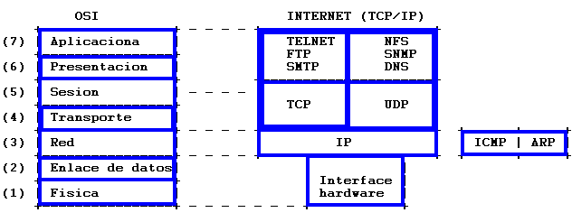
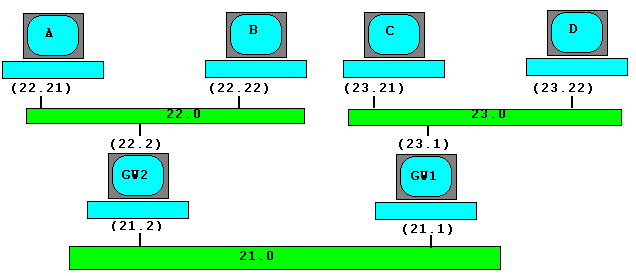
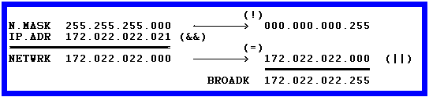
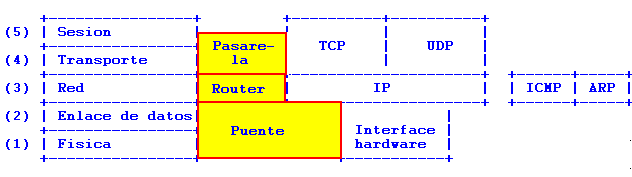

INTRODUCCIÓN:
El protocolo TCP/IP es uno de los protocolos mas ampliamente usados en todo
el mundo. Ello es debido a que es el protocolo usado por Internet (la red de
redes) y por que su uso esta muy extendido en UNIX.
Este documento pretende aclarar los conceptos básicos relativos a TCP/IP,
con el fin de poder adentrase en el fascinante mundo de las comunicaciones.
RECONOCIMIENTOS
La información ha sido obtenida de diversos libros que se mencionan al final
como bibliografía, pero sobre todo de una extensa comunicación por correo
electrónico de mi amigo Luis Colorado en respuesta a mis numerosas dudas.
El lector sagaz deduzca por si mismo quien me animó, ( o sea comprometió )
a escribir este documento. :-)
Una vez más gracias Luis.
Autores:
Luis Colorado Urcola "luis@slug.ctv.es"
Antonio Castro Snurmacher "acastro@ctv.es"
A:
Hagamos un poco de *historia*.
A mediados de los 70, el departamento de Defensa de los Estados Unidos se vio
obligado a dar solución a los problemas de comunicación electrónica interna
que usaban sistemas informáticos variados. Por ello se encargo al ARPA
(Avanced Research Projects Agency) que desarrollara, junto con las principales
universidades y fabricantes de equipos informáticos, un protocolo estandar de
comunicaciones. Todo ello dio lugar a dos redes. Una de uso exclusivamente
militar MILNET y otra con fines experimentales de investigación ARPANET.
Todo ello constituyó el origen del actual Internet y del protocolo TCP/IP.
Q:
Tiene algo que ver TCP/IP con el modelo OSI de 7 niveles ?
A:
La estandarización de las comunicaciones tambien se ha desarrollado con
un modelo alternativo llamado modelo OSI en el que se describen perfectamente
siete distintos niveles. El modelo TCP/IP realmente no describe una estructura
tan precisa de niveles aunque se pueden asimilar y comparar ambos modelos de
la forma siguiente.

Observese que el nivel TCP-UDP no tiene una correspondencia perfecta con el
modelo OSI. Los protocolos TCP están orientados a conexión con lo que, si se
podría hablar de sesión asimilandose al nivel 4 y 5 OSI pero UDP no esta
orientado a conexión y por ello no se puede hablar propiamente de sesión.
UDP utiliza datagramas. Es decir que en lugar de abrir una conexión con el
destino para establecer un dialogo, envia a la red fragmentos de información.
FTP, y TELNET son servicios muy populares y son un buen ejemplo de
protocolos orientados a conexión. NFS es un servicio que permite montar un
sistema de ficheros remoto de forma que podamos acceder a dicho sistema de
ficheros sin apenas percibir que está en una máquina remota. Este último es
un clásico ejemplo de servicio orientado a datagramas.
En el nivel 3 junto al protocolo IP existen tambien los protocolos siguientes:
ICMP (Internet Control Message Protocol)
ARP (Address Resolution Protocol)
RARP (Reverse Address Resolution Protocol)
Por parte del govierno de los Estados Unidos se procura la convergencia de
los protocolos OSI e Internet GOSIP (Protocolo Gubernamental OSI), pero habrá
que esperar para que sea una realidad.
Q:
Las direcciones IP vienen como cuatro numeritos separados por un punto.
Que significa esto ?
A:
Las *direcciones tcpip* son cadenas de treinta y dos bits organizadas como
una secuencia de cuatro bytes. Todas las tramas IP llevan una dirección
de origen (donde se origino la trama) y una dirección destino (a donde va
la misma). Basicamente esto es todo lo que hay que saber cuando se
conecta uno a la red y la dirección IP te la asigna un administrador de red.
Estas direcciones tienen una representación como cuatro numeros enteros
separados por puntos y en notacion decimal, en la jerga habitual de internet.
Las direcciones representan el interface de conexión de un host con la red.
Asi, un host que esta conectado a varias redes como regla general, no tendrá
una única dirección de red, sino varias (normalmente una por cada red a la
que esta conectado).
Pero internamente, Esto no es del todo cierto. Las direcciones IP se
dividen en dos partes (cada una con un cierto numero de bits) cuyo
significado tiene que ver con el sistema de enrutado de tramas. La primera
parte (cuya longitud no es fija y depende de una serie de factores) representa
la red, y debe ser igual para todos los hosts que esten conectados a una misma
red física. La segunda parte representa el host, y debe ser diferente para
todos los hosts que estan conectados a la misma red física.
Q:
Como se hace llegar un mensaje a su destino ?
A:
El mecanismo de decisión de IP que hace que todas las tramas lleguen a su
destino es el siguiente: Cuando la dirección origen y la dirección destino
estan ambas en la misma red (esto se sabe por que su *direccion de red* es
igual en ambas, la direccion de red sera la consecuencia de sustituir por
ceros toda la parte de host en la direccion considerada) IP supone que existe
un mecanismo de nivel inferior (en este caso Ethernet, Token Ring, etc.) que
sabe como hacer llegar la trama hasta el host destino. Cuando la dirección
de red origen y la de destino no coinciden, entonces hay que enrutar.
Para enrutar, se dispone de una tabla que contiene entradas para cada una
de las redes a las que se quieren hacer llegar tramas, que no sean locales a
este host (un host, en general, esta conectado a varias redes, de las que hace
de gateway (pasarela), si la dirección destino de la trama tiene una dirección de red que
coincide con alguna de las direcciones de red propias---las que resultan de
sustituir por ceros la parte de host en cada uno de los interfaces---, entonces
no hace falta enrutar). Esta tabla tiene mas o menos entradas en función de
la complejidad de una internet (o red de redes) y la dirección del siguiente
host en el camino hasta la red de destino.
Por otro lado, la parte que corresponde a red y la parte que corresponde al
host, se realiza usando este esquema (salvo para el subnetting, que a#ade
algo de complejidad).
Existen 5 tipos de direcciones IP. A cada tipo se le asigna una letra, asi, existen direcciones de clases A, B, C, D, E. Las direcciones pertenecen a estas clases en función de los cuatro bits mas significativos del primer byte.
| Clase A | 0nnnnnnn | hhhhhhhh | hhhhhhhh | hhhhhhhh |
| Clase B | 10nnnnnn | nnnnnnnn | hhhhhhhh | hhhhhhhh |
| Clase C | 110nnnnn | nnnnnnnn | nnnnnnnn | hhhhhhhh |
| Clase D | 1110xxxx | xxxxxxxx | xxxxxxxx | xxxxxxxx |
| Clase E | 1111xxxx | xxxxxxxx | xxxxxxxx | xxxxxxxx |
Nota: n representa la parte de red de la dirección y h la parte de host. x tiene otro tratamiento.
Las clases D y E no entran en la discusión del sistema de enrutado IP y no vienen al caso en esta discusion (las direcciones de clase D se usan en multicasting y las direcciones de clase E estan reservadas, por ello no deben usarse para configurar hosts en internet) Asi, puesto en notación punto, las redes de clase A son de la 1.0.0.0 a la 127.0.0.0, las redes de clase B son de la 128.0.0.0 a la 191.255.0.0 y las redes de clase C son de la 192.0.0.0 a la 223.255.255.0 (Como se puede ver hay muy pocas redes de clase A, que permiten tener muchos hosts---InfoVía; Muchas redes de clase C para poquitos hosts---Los centros proveedores de Internet; y un rango intermedio para redes que tengan ambos requisitos). Por otro lado, las redes de clase A tienen el primer byte como parte de red y los tres restantes como parte de host, las redes de clase B tienen los dos primeros bytes como parte de red y los dos ultimos como parte de host y las redes de clase C tienen como parte de red los tres primeros bytes y como parte de host el último.
Q:
Como construiriamos por ejemplo tres redes pequeñas interconectadas entre si ?
Que direcciones podriamos usar ?
A:
Usaremos un ejemplo sencillo para explicar esto.
Existen una serie de direcciones especialmente reservadas para usos privados.
Es decir no se usaran en una red publica de internet.
Para la clase A 10.0.0.0
Para la clase B 172.16.0.0 --> 172.31.0.0
Para la clase C 192.168.0.0 --> 192.168.255.0
Para nuestro ejemplo usaremos tres redes de clase B de tipo 172.22.n.n
En todas las redes (incluidas las que tienen subnetting) existen dos
direcciones de host que estan reservadas. La primera es la que tiene todos
los bits correspondientes a la parte de host a cero. Esta dirección se
utiliza para representar a la propia red y por tanto no se debe asignar a
ningun host. La otra es la que tiene todos los bits puestos a uno, y
representa a todos los hosts que estan conectados a una misma red. En redes
donde se permite el broadcast (donde un host puede hacer que todos reciban
el mensaje que ha enviado) esta dirección se utiliza para este fin. Estas
direcciones se llaman direcciones de red y de broadcast resp. También está
reservada la dirección IP que tiene todos los bits a cero en la parte de
red para indicar *esta red*, aunque esta solo está permitido usarla cuando
aun no conocemos nuestra dirección IP completamente (por ejemplo cuando hay
que adquirirla por la propia red, en el arranque, al configurar, etc.)

| A | B | C | D | |
| IP.ADR | 172.22.22.21 | 172.22.22.22 | 172.22.23.21 | 172.22.23.22 |
| N.MASK | 255.255.255.0 | 255.255.255.0 | 255.255.255.0 | 255.255.255.0 |
| BROADK | 0.0.0.255 | 0.0.0.255 | 0.0.0.255 | 0.0.0.255 |
| NETWRK | 172.22.22.0 | 172.22.22.0 | 172.22.23.0 | 172.22.23.0 |
Según lo que hemos explicado, la red 172.22.0.0 es una red clase B y por tanto su máscara por defecto es la 255.255.0.0 en el ejemplo está subneteada con máscara 255.255.255.0.
* Hay tres redes:
La 172.22.22.0/255.255.255.0
La 172.22.23.0/255.255.255.0
La 172.22.21.0/255.255.255.0
(Ponemos la mascara ya que no es la mascara por defecto).
* Hay dos gateways, con dos direcciones cada uno:
| GW1 | GW2 | |
| IP.Addr | 172.22.22.2/172.22.21.2 | 172.22.23.1/172.22.21.1 |
| N.Mask | 255.255.255.0(ambas) | 255.255.255.0(ambas) |
| Broadc | 172.22.22.255/172.22.21.255 | 172.22.23.255/172.22.21.255 |
| NetAddr | 172.22.22.0/172.22.21.0 | 172.22.23.0/172.22.21.0 |
y para los hosts.
| A | B | C | D | |
| IP.ADR | 172.22.22.21 | 172.22.22.22 | 172.22.23.21 | 172.22.23.22 |
| N.MASK | 255.255.255.0 | 255.255.255.0 | 255.255.255.0 | 255.255.255.0 |
| BROADK | 172.22.22.255 | 172.22.22.255 | 172.22.23.255 | 172.22.23.255 |
| NETWRK | 172.22.22.0 | 172.22.22.0 | 172.22.23.0 | 172.22.23.0 |
Q:
Que es una máscara, y como funciona ?
A:
La red del ejemplo está formada por tres subredes de la red de
clase B 172.22.0.0 con máscaras 255.255.255.0 (o sea, consideradas como
o si la red 172.22.0.0 se hubiera subneteado)
La *máscara de red* no es más que una dirección IP donde se ha sustituido todos
los bits de la parte de red de la dirección por unos y los bits correspondientes
a la parte de host por ceros. Así, la máscara de red de una red
de clase A será 255.0.0.0, la de una red de clase B será 255.255.0.0
y la de una clase C será 255.255.255.0.
Por que se usa entonces la máscara de red si está implicita en el tipo de
direccion?
Se ha comprobado que a veces el sistema de clases no es apropiado. A un
proveedor le dan una clase C completa pero el quiere dividirla en cuatro
redes diferentes (y no va a usar cuatro clases C para esto---1000 direcciones
IP, se malgastarían muchas). Pues bien, dentro de una misma red, se puede
extender el mecanismo de routing, considerando que la parte de host son los
bits cero y la parte de red son los bits uno de la máscara y asociando a cada
dirección IP una máscara en el momento de configurarla (por supuesto, los
valores por defecto serán los de la clase de la red, aunque se podrán añadir,
y solamente añadir, bits uno a la máscara, con el fin de *subnetearla*)
En el caso del ejemplo de este parrafo, el proveedor podría extender la
mascara de subred dos bits más allá de la frontera impuesta por el tipo de
la dirección adquirida y considerar que tiene cuatro redes (en este caso
la parte de red serían los primeros tres bytes y dos bits del cuarto y la
parte del host los restantes)
Q:
Por ejemplo partiendo de la red 21.0 para ir a la 23.0 habria que usar el GW1,
y para ir de la 23.0 a la 22.0 habria que usar GW1 y GW2.
Como se indica la ruta a tomar para cada destino ?
A:
Para ello se usan las *tablas de rutas*.
Para construir las tablas de rutas, formaremos para cada máquina, una tabla
con la forma de dirigir las tramas hacia las redes que no vemos directamente,
con la ventaja adicional de que como la dirección 0.0.0.0 representa obviamente
la red local, podemos usar esta dirección especial para indicar la ruta por
defecto (es decir, la dirección local a la que enviar las tramas que no tienen
ruta y que necesariamente hay que enrutar). Así, las tablas de rutas quedarían:
Host A: 0.0.0.0(default) ---> 172.22.22.2
Host B: 0.0.0.0(default) ---> 172.22.22.2
Host C: 0.0.0.0(default) ---> 172.22.23.1
Host D: 0.0.0.0(default) ---> 172.22.23.1
GW1: 172.22.22.0 ---> 172.22.21.2
GW2: 172.22.23.0 ---> 172.22.21.1
Si nos fijamos, podemos ver que la *ruta por defecto* es el gateway por defecto que aparece en la configuración de muchas máquinas Linux, pero para los gateways no aparece ningun gateway por defecto. Esto es una característica de las redes que tienen backbones.
A:
Literalmente, backbone significa columna vertebral.
Las tramas se canalizan hacia el backbone, pero este, al final debe decidir a
donde van a parar las tramas. Como conclusión de esta última frase se
desprende que en todo backbone (red de nivel jerárquico superior donde no hay
ninguna red mas importante---p.ej. el backbone de Internet, o la red principal
de una empresa que no tiene conexiones con el exterior) los gateways que forman
el backbone deben tener rutas a todas las redes y no aparecer una ruta por
defecto en sus tablas de rutas, mientras que para el resto de las redes, la
ruta por defecto (y para los hosts) sera siempre la que lleve hacia el backbon.
Q:
Como se configura un puesto?
A:
Una vez comprendidos los conceptos pasemos a calcular las direcciones.
Con la dirección IP y la máscara de red se pueden obtener las demas.
Tomando como ejemplo el nodo A observamos que se cumplen las siguientes
relaciones:

Q:
Que criterios se usan para dividir una gran red en redes mas pequeñas con
el mecanismo de subnetting.
A:
Subnetear una red no sirve unicamente a criterios topológicos. Puede servir
para facilitar la administración delegando a cada administrador la gestión de
direcciones de una subred. Puede facilitar la adaptación de la red a la
estructura de una organización. También puede aislar redes con tráfico
interno abundante y facilitar el diagnóstico de problemas en la red.
Q:
Se podrían juntar dos redes físicas en una sola sin más ?
A:
Consideremos que pasaría en el ejemplo anterior al unir fisicamente las redes
22.0 con la 23.0. En este caso construiriamos una internet.
(todos los hosts tendrían que tener la misma dirección de red) formada por dos
redes que se unen en dos puntos. Si unieramos y ya esta (sin cambiar nada en
las configuraciones) el sistema funcionará, pero con la salvedad de que los
hosts que están en redes diferentes no se podrán enviar tramas directamente
(sin un gateway)
Tengamos en cuenta que una red ethernet es un bus y por tanto en un instante de tiempo dado, solo lo usan dos/varios contendientes (el que habla y el/los que escucha/n). Si usamos una red tipo bus para implementar dos redes disjuntas, nos estamos cargando el ancho de banda de dos redes (hasta 10Mbps + 10Mbps) para dejarlo todo en una red (hasta 10Mbps, max)
Q:
Que otros dispositivos se utilizan para unir redes ?
A:
Los términos Pasarelas (Gateways), Routers (Routers) y Puentes (Bridges) se
refieren a una serie de dispositivos para interconectar redes. Muchas veces
estos dispositivos son un PC con un par de tarjetas de comunicaciones para
conectarse simultaneamente a dos redes funcionando con un software apropiado.
Un puente conecta dos redes parecidas (por ejemplo pueden ser distintas en su
velocidad) sin cambiar la estructura de los mensajes que circulan por ellas.
Un Router conecta dos redes que son iguales (o parecidas). No hay traducción
de un protocolo a otro pero si traducción de direcciones.
Una pasarela puede conectar redes distintas (por ejemplo una ethernet y una
token ring) realiza la conversión de protocolos y la traducción de direcciones.
Si recordamos los modelos OSI y TCP/IP explicados anteriormente vemos que en
los distintos dispositivos actuarían a distinto nivel del modelo de comunicaciones.

Q:
Puesto que un router incluye la función de puente, y la pasarela engloba las
funciones de router y de puente.
Porque entonces no se usa siempre una pasarela (gateway)?
A:
Cuando todos los nodos de una red deben alcanzar todos los nodos de otra red,
se provoca una sobre carga de la red debido a los protocolos de rutado. En este
caso y cuando ambas redes utilizen el mismo protocolo de red, la mejor
solucion es un puente.
Existe otro tipo de dispositivo que sirve para conectar dos redes y que se
llama Firewall. Se trata de un dispositivo lógico que sirve para conectar
de forma segura la parte privada de una red con la parte pública. Estos
dispositivos pueden establecer una política de restricciones a la información
que circula por ellos.
Q:
Para determinar una ruta como la mas idonea, que criterio se sigue ?
A:
El protocolo de información de rutado (RIP) es un protocolo que esta basado
unicamente en el coste.
A cada ruta se le asocia un coste en función del rendimiento de la red, tipo de
la linea, etc. Esto permite determinar de entre varias rutas posibles cual es la
de menor coste.
Cada ruter de una red envía y recibe información de rutado que permite
actualizar las tablas de rutado cada 30 segundos. Cuando el coste de una ruta
supera el valor 16 el sistema se considera fuera de alcance. La caida de un
nodo de la red suele provocar la perdida de algunos mensajes hasta que las
tablas de rutado de todos los ruters se reajustan.
"UNIX Wetwork Programming" by W. Richard Stevens, Ed Prentice Hall.
"TCP/IP Network Administration" by Carig Hunt, Ed. O'Reilly & Associates, Inc.
"LINUX Network Administrators's Guide" by Olaf Kirch Ed. O'Reilly & Assoc. Inc.
"Utilizando Linux", by Tacket & Gunter", Ed. Prentice Hall.